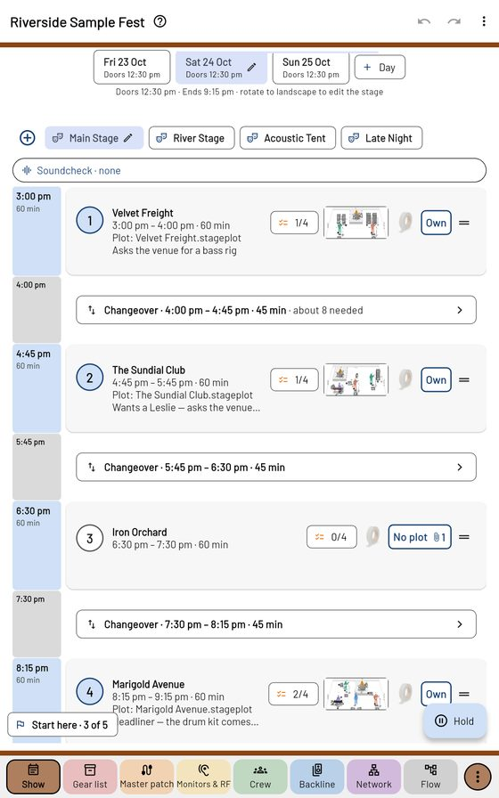

Getting started
PatchWork Live runs a show from the engineer's side — the running order, the changeovers and the crew on the night — with the house patch, the gear and the bands' stage plots feeding it.
Install
PatchWork Live is for an Android tablet (10" is best). The co-worker test build comes as a file: open it on the tablet and allow installs from your browser or Files app when Android asks. The crew app, 2ndRodeo, goes on phones.
The sample festival
The quickest way in: Help → Open the sample festival (or open Riverside Sample Fest.zip with ⋮ → Show → Open show…). It's made up — three days, four stages, fifteen crew, fake bands with real-looking plots and riders. Your own show is backed up first, so try anything.
The Start here card (bottom left) is a short list to tick through; fold it with − when it's in the way.
Two ways to hold the tablet
Upright — the show's pages. Sideways — the stage plot of the act you picked, drawn to scale (see Stage plots).
The upright pages

Their names run along the bottom: Show · Gear list · Master patch · Monitors & RF · Crew · Backline · Network · Flow. Tap one, or swipe that strip for the next. Hold a page name to switch pages off, put them in your order and pick the one the app opens on.
Each page has its own colour — brown, red, orange, yellow, green, blue, violet, grey, like a resistor code — on its tile, in a line under the top bar and above the names, and on the round ⋮ at the end, which is that page's own menu.
Undo / Redo in the top bar work across every page. The ? beside the show's name opens the page's quick start.
The ⋮ at the top right holds what's for the whole app: Show (new, open, save, cloud, print), Look, Settings and Help.
Several stages
The stage chips under the days are shared by every page — pick River Stage and the patch, crew, gear and backline are River Stage's. Working one stage all day? Hold its chip → Pin this stage: every page stays there and the other stages hide. Unpin beside the chip brings them back.